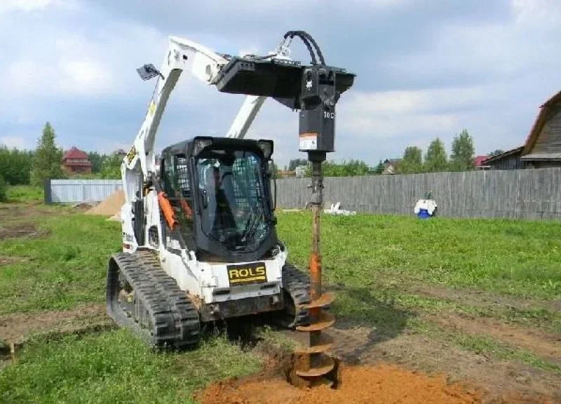

Аренда с машинистом · Москва и МО
Аренда гусеничного мини-погрузчика
Для планировки участка, погрузки материалов и работ на мягком грунте. Подберём навесное оборудование под вашу задачу.
- Рабочий вес
- 4,6 т
- Грузоподъёмность
- 1 200 кг
- Объём ковша
- 0,6 м³
- Ширина машины
- 2,02 м
Стоимость аренды
Подачу техники и навеску согласуем по адресу объекта.
Планировка и отсыпка участка
Гусеничный мини-погрузчик распределяет песок, грунт и щебень. Его используют, чтобы выровнять площадку под стройку, дорожки или благоустройство.
Рассчитать работы
Погрузка на стройплощадке
Паллетные вилы подходят для разгрузки кирпича и блоков. Ковш используют для погрузки грунта и сыпучих материалов.
Обсудить погрузку
Работа на небольших площадках
Гусеничный ход помогает работать на рыхлом и влажном грунте. Для заезда на участок заранее уточним ширину проезда и состояние подъезда.
Уточнить условия подачи
Навесное оборудование
Помимо стандартного и увеличенного ковша, для аренды можно согласовать щётку, вилы, гидромолот или гидробур. Укажите нужную навеску в комментарии к заявке.
Подобрать навеску
Договор аренды
Условия заказа фиксируются после согласования деталей.
Посмотреть состав документа
- Предмет договораТехника, адрес подачи и перечень работ.
- Тариф и срокПродолжительность аренды, стоимость и условия доставки.
- Приложение к договоруЗаявка с адресом, временем подачи и контактами на объекте.
Рассчитать аренду на ваш объект
Оставьте телефон и коротко опишите задачу.
Остались вопросы?
Обсудим ваш объект и подберём технику.